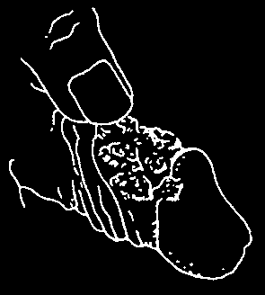

Do not give more than 60 mg. a day.
drinking alcohol when taking antihistamines.
Promethazine (Phenergan) and diphenhydramine
Epinephrine
(Benadryl) are strong antihistamines that cause a
(adrenaline, Adrenalin)
lot of sleepiness. Dimenhydrinate (Dramamine) is
Name: _________________ price: _______ for ______ similar to diphenhydramine and is most used for motion sickness. However, for vomiting due to other
Often comes in: ampules of 1 mg. in 1 ml.
causes, promethazine often works better.
Epinephrine should be used for:
Chlorpheniramine is a less expensive
1. severe attacks of asthma when there is trouble antihistamine and causes less sleepiness. For this breathing and other medicines are not available.
reason, it is sometimes best to use chlorpheniramine
2. severe allergic reactions or allergic shock due to calm itching in the daytime. Promethazine is to penicillin injections, tetanus antitoxin, or other useful at night because it encourages sleep at the antitoxins made from horse serum (see p. 70).
same time that it calms the itching.
Dosage of epinephrine for asthma—using ampules
There is no proof that the antihistamines do any of 1 mg. in 1 ml. of liquid— good for the common cold. They are often used more
First count the pulse. Then inject just under the skin:
than they need to be. They should not be used much.
adults: 1⁄3 ml.
Antihistamines should not be used for asthma, because they make the mucus thicker and can make breathing more difficult.
One antihistamine is all that is usually needed in a medical kit. Promethazine is a good choice.
children 7 to 12 years: 1⁄
Because it is not always available, doses for other
5 ml.
children 1 to 6 years: 1⁄ antihistamines are also given.
10 ml.
children under 1 year: DO NOT GIVE
As a general rule, antihistamines are best
You can repeat the dose every ½ hour if needed, given by mouth. Injections should be used only up to 3 times.
to help control severe vomiting or before giving antitoxins (for tetanus, snakebite, etc.) when there
Dosage of epinephrine for allergic shock—using ampules of 1 mg. in 1 ml. of liquid— is special danger of allergic shock. For children, it is often best to give a rectal suppository.
GREEN PAGES
Promethazine (Phenergan)
CAUTION: Do not give diphenhydramine to newborn babies or to women who are breastfeeding. It is best
Name: ________________________________________ not to use diphenhydramine in pregnancy unless
Often comes in:
absolutely necessary.
tablets of 12.5 mg.
Dosage of diphenhydramine (5 mg./kg./day)—using
Price: ________________ for ___________________ capsules of 25 mg.— injections—ampules of 25 mg. in 1 ml.
Give 3 or 4 times a day:
Price: ________________ for ___________________ adults: 25 to 50 mg. (1 or 2 capsules)
suppositories of 12.5 mg., 25 mg., and 50 mg.
children 8 to 12 years: 25 mg. (1 capsule)
Price: ________________ for ___________________ children 2 to 7 years: 12.5 mg. (½ capsule)
CAUTION: Do not give to children under 2 years old.
babies: 6 mg. (¼ capsule)
Pregnant or breastfeeding women should only use
—using intramuscular (IM) injections, 50 mg. in promethazine if it is absolutely necessary.
each ml.—
Dosage of promethazine (1 mg./kg./day)
Diphenhydramine should be injected only in the
—using tablets of 12.5 mg.— case of allergic shock. Inject once, and again in
Give by mouth 2 times a day.
2 to 4 hours if necessary:
adults: 25 to 50 mg. (½ to 1 ml.)
In each dose give:
children: 10 to 25 mg., depending on size adults: 25 to 50 mg. (2 to 4 tablets)
(1⁄5 to ½ ml.)
children 7 to 12 years: 12.5 to 25 mg. (1 or babies: 5 mg. (1⁄10 ml.)
2 tablets)
children 2 to 6 years: 6 to 12 mg. (½ to
1 tablet)
Chlorpheniramine babies 1 year old: 4 mg. (1⁄3 tablet)
Name: _________________ price: _______ for ______ babies under 1 year: 3 mg. (¼ tablet)
Often comes in: 4 mg. tablets (also tablets of other
—using intramuscular (IM) injections, 25 mg. in a ml.— sizes, syrups, etc.)
Inject once, and again in 2 to 4 hours, if
Dosage for chlorpheniramine:
necessary.
Take 1 dose 3 or 4 times a day.
In 1 dose inject:
adults: 25 to 50 mg. (1 to 2 ml.)
In each dose give:
children 7 to 12 years: 12.5 to 25 mg. (½ to adults: 4 mg. (1 tablet)
1 ml.)
children under 12: 2 mg. (½ tablet)
children under 7 years: 6 to 12 mg. (¼ to babies: 1 mg. (¼ tablet)
½ ml.)
babies under 1 year: 2.5 mg. (0.1 ml.)
Dimenhydrinate (Dramamine)
—using rectal suppositories of 25 mg.—
Name: _________________ price: _______ for ______
Put high up the rectum (anus) and repeat in 4 to
6 hours if necessary.
Often comes in: 50 mg. tablets; also syrups with
12.5 mg. in a teaspoon; also suppositories to put up
In each dose insert:
the anus adults and children over 12 years: 25 mg.
(1 suppository)
This is sold mostly for motion sickness, but can children 7 to 12 years: 12.5 mg.
be used like other antihistamines to calm allergic
(½ suppository)
reactions and to encourage sleep.
children 2 to 6 years: 6 mg.
Dosage of dimenhydrinate:
(¼ suppository)
Take up to 4 times a day.
In each dose give:
Diphenhydramine (Benadryl)
adults: 50 to 100 mg. (1 or 2 tablets)
children 7 to 12 years of age: 25 to 50 mg.
Name: ________________________________________
(½ to 1 tablet)
Often comes in:
children 2 to 6 years: 12 to 25 mg. (¼ to capsules of 25 mg. and 50 mg.
½ tablet)
Price: ________________ for ___________________ children under 2 years: 6 to 12 mg. (1⁄8 to
¼ tablet)
injections: ampules with 10 mg. or 50 mg. in each ml.
Price: ________________ for ___________________
GREEN PAGES Where There Is No Doctor 2013
ANTITOXINS
The following are distributors of antivenom products in different parts of the world. In many
WARNING: Many antitoxins are made from horse countries, antivenoms are available through the serum, such as some tetanus antitoxins and the government:
antivenoms for snakebite and scorpion sting. With
North America: CrofabTM (Crotalidae Polyvalent these there is a risk of causing a dangerous allergic
Immune Fab-Ovine) for rattlesnakes, copperheads, reaction (allergic shock, see p. 70). Before you inject cottonmouths, and water moccasins. From a horse serum antitoxin, always have epinephrine ready in case of an emergency. In persons who
Fougera, Inc., 800-645-9833, www.fougera.com.
are allergic, or who have been given any kind of
Product information also from the manufacturer, antitoxin made of horse serum before, it is a good
Protherics, (1) 615-327-1027, e-mail: info@btgplc.com, idea to inject an antihistamine like promethazine www.btgplc.com/products/199/marketedproducts.html
(Phenergan) or diphenhydramine (Benadryl)
Mexico, Central America, and South America:
15 minutes before giving the antitoxin. When treating
Antivipmyn® and Antivipmyn TRI® (Faboterapia for snake, insect, or other bites, also give tetanus polivalente antiviperino) for rattlesnakes and other antitoxin.
pit vipers, as well as water moccasins, terciopelo, massasauga, bush master, and others.
From Instituto Bioclon, Mexico, D.F.,
Scorpion antitoxin or antivenom tel: (52) 5665-4111, www.bioclon.com.mx
Name: _________________ price: _______ for ______
Antivenoms are also available from Instituto
Often comes
Clodomiro Picado, Facultad de Microbiologia, lyophilized (in powdered form) for injection
Universidad de Costa Rica, San Jose, Costa Rica, tel: (506) 2229-0344, www.icp.ucr.ac.cr, and
Different antivenoms are produced for scorpion
Instituto Butantan, Sao Paulo, Brazil, sting in different parts of the world. In Mexico, tel: (55) 11-3726-7222, fax: (55) 11-3726-1505,
Laboratories BIOCLON produces Alacramyn.
email: instituto@butantan.gov.br,
Antivenoms for scorpion sting should be used www.butantan.gov.br only in those areas where there are dangerous or
South Africa: Boomslang antivenom, Echis deadly kinds of scorpions. Antivenoms are usually antivenom, polyvalent antivenoms for puff adder, needed only when a small child is stung, especially
Gaboon adder, rinkhals, green mamba, Jameson’s if stung on the main upper part of the body or head.
mamba, black mamba, cape cobra, forest cobra,
To do most good, the antivenom should be injected snouted cobra and Mozambique spitting cobra.
as soon as possible after the child has been stung.
Also scorpion and spider antivenoms. From
Antivenoms usually come with full instructions.
South African Vaccine Producers (SAVP),
Follow them carefully. Small children often need
P.O. Box 28999, Sandringham 2131, Johannesburg, more antivenom than larger children. Two or 3 vials
South Africa, tel: (27) 11-386-6000, may be necessary.
fax: (27) 11-386-6016, www.savp.co.za
Most scorpions are not dangerous to adults.
Egypt: Antivenoms for horned viper, Egyptian cobra,
Because the antivenom itself has some danger in black-necked spitting cobra, East African carpet its use, it is usually better not to give it to adults.
viper, and others. From
Vacsera, 51 Wezaret El Zeraha, Agouza, Giza, Egypt, tel: (202) 376-111-11, www.vacsera.com
Snakebite antivenom or antitoxin
India: Antivenoms for Indian cobra, Indian krait,
Name: _________________ price: _______ for ______
Russell’s viper, Saw-scaled viper and others, from:
Often comes in: bottles or kits for injection
Haffkine Biopharmaceutical Co., Mumbai, India, tel: (91) 22-412-9320, fax: (91) 22-416-8578,
Antivenoms, or medicines that protect the www.vaccinehaffkine.com.
body against poisons, have been developed for
Serum Institute of India, tel: (91) 20-269-93900, the bites of poisonous snakes in many parts of fax: (91) 20-269-93921, www.seruminstitute.com the world. If you live where people are sometimes bitten or killed by poisonous snakes, find out what
Indonesia: Antivenoms for branded krait, Malayan antivenoms are available, get them ahead of time, pit viper, and Southern Indonesian spitting cobra.
and keep them on hand. Some antivenoms—those
Biofarma, Bandung, Indonesia, in dried or 'lyophilized’ form—can be kept without tel: (62) 22-203-3755, fax: (62) 22-204-1306, refrigeration. Others need to be kept cold.
www.biofarma.co.id
GREEN PAGES
Thailand: Antivenoms for king cobra, banded krait,
FOR SWALLOWED POISONS
Russell’s viper, Malayan pit vipers, and others.
Thai Red Cross Society, Bangkok, Thailand,
Activated Charcoal tel: (66) 2252-0161, fax: (66) 2252-0212,
This comes as a powder. Follow the directions on www.redcross.or.th the bottle, or mix the indicated dosage in 1 glass of
Instructions for the use of snakebite antivenoms water or juice and drink the whole glass.
usually come with the kit. Study them before
Activated charcoal absorbs poisons that have you need to use them. The bigger the snake, or been swallowed and reduces the harm they the smaller the person, the larger the amount cause. It is most effective if used immediately after of antivenom needed. Often 2 or more vials are swallowing the poison. Do not use this medicine necessary. To be most helpful, antivenom should be if the person has swallowed strong acid, lye, injected as soon as possible after the bite.
gasoline, or kerosene.
Be sure to take the necessary precautions to
Dosage of activated charcoal, within 1 hour after avoid allergic shock (see p. 70).
swallowing poison:
adults and children 12 years and older:
Antitoxins for tetanus
50 to 100 g., 1 time only children from 1 to 12 years:
Tetanus Immune Globulin (human) often comes in:
25 g., 1 time only, or 50 g. in case of vials of 250 units serious poisoning
Tetanus antitoxin (horse) often comes in: vials of children under 1 year old:
1,500, 20,000, 40,000, and 50,000 units
1g./kg. 1 time only
In areas where there are people who have not
To eliminate poison from the body after effects been vaccinated against tetanus, the medical kit of the poison have begun:
adults and children older than 1 year:
should have an antitoxin for tetanus. There are
25 to 50 g. every 4 to 6 hours
2 forms, one made from human serum (tetanus children under 1 year old:
immune globulin, Hyper-tet), and one made from
1g./kg., 1 time, followed by ½ this dose horse serum (tetanus antitoxin). If available, use every 2 to 4 hours. For example, if the tetanus immune globulin, as it is less likely to baby weighs 6 kg., give 6 g. of cause a severe allergic reaction.
activated charcoal for the first dose,
But if you use horse serum tetanus antitoxin, and 3 g. every 2 to 4 hours afterwards.
take precautions against allergic reaction: If the person suffers from asthma or other allergies, or has ever received any kind of antitoxin made from horse serum, give an injection of antihistamine such
FOR SEIZURES (FITS, CONVULSIONS)
as promethazine 15 minutes before injecting the antitoxin.
Phenobarbital and phenytoin are common medicines used to prevent seizures of epilepsy.
If a person who is not fully vaccinated against
Other, more expensive medicines are sometimes tetanus has a severe wound likely to cause tetanus available, and doctors often prescribe two or more
(see p. 89), before he develops the signs of tetanus, medicines. However, usually a single medicine inject 250 units (1 vial) of tetanus immune globulin.
works as well or better, with fewer side effects.
If using tetanus antitoxin, inject 1,500 to 3,000 units.
Medicines to prevent seizures are best taken at
Inject babies with 750 units of tetanus antitoxin.
bedtime, because they often cause sleepiness.
If a person develops the signs of tetanus,
Diazepam can be given to stop a long-lasting inject 5,000 units of tetanus immune globulin, or epileptic seizure or a seizure during pregnancy or
50,000 units of tetanus antitoxin. Give it in many child birth (eclampsia), but it is not usually taken intramuscular injections in the large muscles of the daily to prevent them. Magnesium sulfate can also body (buttocks and thighs). Or, half the amount can be given to stop eclampsia.
be given intravenously if someone knows how.
The signs of tetanus usually continue to get worse in spite of treatment with antitoxin. The other measures of treatment described on pages 183 and 184 are equally or more important. Begin treatment at once and get medical help fast.
GREEN PAGES Where There Is No Doctor 2013
Phenobarbital (phenobarbitone, Luminal)
Dosage of phenytoin, by mouth;
Name: ________________________________________
Divide the daily dose into 2 or 3 equal parts.
For example, if a 4 year old child weighs 20 kg.,
Often comes in:
give 150 mg. a day, divided into 2 doses of 75 mg.
tablets of 15 mg., 30 mg., 60 mg. and 100 mg.
each, or 3 doses of 50 mg. each.
Price: ________________ for ___________________ adults and children older than 16 years:
syrup of 15 mg. in 5 ml.
4 to 6 mg./kg./day
Price: ________________ for ___________________ children 10 to 16 years: 6 to 7 mg./kg./day children 7 to 9 years: 7 to 8 mg./kg./day
Phenobarbital can be taken by mouth to help children 4 to 6 years: 7.5 to 9 mg./kg./day prevent seizures (epilepsy). For epilepsy, it is often children 6 months to 4 years:
necessary to continue the medicine for life. The
8 to 10 mg./kg./day lowest dose that prevents seizures should be used.
children less than 6 months old: 5 mg./kg./
WARNING: Too much phenobarbital can slow down day or stop breathing. Its action begins slowly and lasts
If the dose does not completely prevent the a long time (up to 24 hours, or longer if the person is attacks, slowly increase the dose every 15 days up not urinating). Be careful not to give too much!
to the maximum dosage per kg. of weight, divided
Dosage of Phenobarbital:
into 3 equal doses per day.
adults and children over 12 years:
If this dosage does prevent attacks, reduce
1 to 3 mg./kg./day by mouth, divided the dosage little by little until you are giving the into 2 or 3 equal doses, or 50 to 100 mg.
smallest dose possible to prevent seizures.
2 or 3 times a day.
For children 12 years old or younger, give
We do not provide the dosage of phenytoin for
1 dose by mouth at night, either all at once injection. These should only be given by a person or divided into 2 equal doses as follows:
with experience giving injections into a vein.
children 5 to 12 years: 4 to 6 mg./kg./day children 1 to 5 years: 6 to 8 mg./kg./day
Diazepam (Valium)
children under 1 year: 5 to 8 mg./kg./day
We do not give the dosage for preparing
Name: _________________ price: _______ for ______ an injectable solution of phenobarbital here
Often comes in:
because these injections are very dangerous.
injections of 5 mg. in 1 ml. of liquid
They should only be given by a person who has injections of 10 mg. in 2 ml. of liquid experience preparing the solution and giving tablets of 5 mg. and 10 mg.
injections into a vein (see p. 178).
We do not give the dosages for diazepam injections. These should only be given by a person
Phenytoin with experience giving injections into a vein.
(diphenylhydantoin, Dilantin)
To stop an epileptic seizure lasting more than
Name: ________________________________________
15 minutes, put the liquid solution for injection into a
Often comes in:
syringe without a needle and put the liquid directly capsules of 25 mg., 50 mg., and 100 mg.
up the anus, or grind up 1 tablet, mix the powder
Price: ________________ for ___________________ with water, and put the mixture up the anus.
syrup with 250 mg. in 5 ml.
Dosage of diazepam solution, in the anus:
Price: ________________ for ___________________ adults and children over 12 years:
5 to 10 mg.
This helps prevent the seizures of epilepsy. The children 7 to 12 years: 3 to 5 mg.
medicine must often be taken for life. The lowest children under 7 years: 0.2 mg./kg.
dosage that prevents seizures should be used.
for very old people: 0.25 mg./kg.
Side effects: Swelling and abnormal growth
If the seizure is not controlled 15 minutes after of the gums often occur with long-time use of giving the medicine, repeat the dose. Do not phenytoin. If this is severe, another medicine repeat more than once.
should be used instead. Gum problems can be partly prevented by keeping the mouth clean and brushing or cleaning the teeth and gums well after eating.
GREEN PAGES
WARNING:
Pituitrin is similar to oxytocin, but more
1. Too much diazepam can slow down or stop dangerous, and should never be used except in breathing. Be careful not to give too much!
a case of emergency bleeding when oxytocin,
2. Diazepam is a habit-forming (addictive) drug.
misoprostol, and ergonovine are not available.
Avoid long-term or frequent use. Keep this
For bleeding in the newborn child, use vitamin K medicine under lock and key.
(see p. 392). Vitamin K is of no use for bleeding of
3. Diazepam can be dangerous for pregnant or the woman from childbirth, miscarriage, or abortion.
breastfeeding women. Only use to stop seizures
(eclampsia).
For tetanus, give enough to control most of
Ergonovine or ergometrine maleate the spasms. For adults and children over 5 years,
(Ergotrate, Methergine)
start with 5 mg. by mouth or into the anus (less in
Name: ________________________________________ children) and give more later if necessary, but not more than 10 mg. at 1 time, or more than 50 mg. in
Often comes in:
1 day. Wait for 30 minutes before repeating a dose.
injections of 0.2 mg. in a 1 ml. ampule
For children younger than 5 years old, give 1 to 2
Price: ________________ for ___________________ mg. in the anus every 3 to 4 hours.
tablets of 0.2 mg.
To relax muscles and calm pain, 30 minutes
Price: ________________ for ___________________ before setting broken bones in an adult, give
Ergonovine can be used to prevent or control
10 mg. by mouth.
heavy bleeding after the placenta has come out. It
For eclampsia (sudden seizures during also controls heavy bleeding after miscarriage or pregnancy or childbirth), give 20 mg. diazepam abortion. Do not give to a woman with hypertension.
solution in the anus. If there are other convulsions,
Dosage:
give 10 mg. after each one, leaving at least 20 minutes between doses. Magnesium sulfate works
To treat heavy bleeding after the afterbirth better, and is safer for pregnant women.
(placenta) has come out, or after miscarriage or abortion, give 1 ampule (0.2 mg.) of ergonovine by intramuscular injection or 1 tablet (0.2 mg.)
Magnesium Sulfate —for eclampsia by mouth. In extreme emergencies, you can give
1 ampule by intravenous injection if you have been
Name: _________________ price: _______ for ______ trained to do so. Repeat dose every 2 to 4 hours for
Often comes in: 10%, 12.5%, 25%, or 50% solution severe bleeding (more than 2 cups) or every 6 to for injection
12 hours for less severe bleeding. Continue to give
Dosage to stop a seizure in a woman with eclampsia:
the medicine until the bleeding has stopped.
Inject 5 g. of 50% solution into each buttock muscle
To prevent heavy bleeding after giving birth, give once. Repeat after 4 hours if needed.
0.2 mg. of ergonovine after the afterbirth comes out.
WARNING: Too much magnesium sulfate can slow down or stop breathing. Be careful not to give too
Oxytocin (Pitocin)
much! Do not give to women with kidney problems.
Name: _________________ price: _______ for ______
Often comes in: ampules of 10 units in 1 ml.
FOR SEVERE BLEEDING AFTER
BIRTH (POSTPARTUM HEMORRHAGE)
Oxytocin can be used to prevent or control severe bleeding of the mother after the baby is
For information on the right and wrong use born and before or after the afterbirth comes out.
of medicines to control bleeding after birth, see
(It also helps bring the afterbirth out, but should page 266. Ergonovine, oxytocin, and misoprostol not be used for this unless there is heavy bleeding should only be used to control bleeding after or delay.) It can also be used to control heavy the baby is born. Their use to speed up labor bleeding after miscarriage or abortion.
or to give strength to the mother in labor can be
Dosage:
dangerous both to the mother and child. If there is much bleeding before the afterbirth (placenta)
To treat heavy bleeding, give 1 ml. (10 units)
comes out, but after the child is born, oxytocin by intramuscular injection. If severe bleeding or misoprostol can be given. But do not use continues, inject another 1 ml. in 15 minutes.
ergonovine or ergometrine before the afterbirth
To prevent heavy bleeding after birth, give 1 ml.
comes out, as this may prevent it from coming out.
after the baby is born.
GREEN PAGES Where There Is No Doctor 2013
Misoprostol (Cytotec)
Mixed (or multi) vitamins
Name: _________________ price: _______ for ______
Name: _________________ price: _______ for ______
Often comes in: tablets of 100 or 200 mcg.
These come in many forms, but tablets are
Misoprostol can be used to prevent or control cheapest and work well. Injections of vitamins are heavy bleeding after childbirth, and control heavy rarely necessary, are a waste of money, cause bleeding from miscarriage or abortion. It can unnecessary pain and sometimes abscesses.
also be used to end a pregnancy, but it is safer
Tonics and elixirs often do not have the most when taken with another medicine, mifepristone important vitamins and are usually more expensive.
(see Where Women Have No Doctor for more
Nutritious food is the best source of vitamins.
information).
If additional vitamins are needed, use vitamin tablets.
Dosage for heavy bleeding:
In some cases of poor nutrition added vitamins
Give 600 mcg by mouth (dissolve tablets against may help, and multivitamins can be helpful for the cheek or under the tongue and then swallow people with HIV. Be sure the tablets used contain any remaining parts). If the woman is feeling all the important vitamins (see p. 118).
nauseous, you can also put the tablets up her anus
Using standard tablets of mixed vitamins, to dissolve there.
1 tablet daily is usually enough.
Vitamin A (retinol)—for night blindness and xerophthalmia
FOR PILES (HEMORRHOIDS)
Name: ________________________________________
Suppositories for hemorrhoids
Often comes as:
capsules of 200,000 units, 60 mg. of retinol
Name: _________________ price: _______ for ______
(also in smaller doses)
These are special bullet-shaped tablets to be price: ________________ for ___________________ put up the anus. They help make hemorrhoids injections of 100,000 units smaller and less painful. There are many different price: ________________ for ___________________ preparations. Those that are often most helpful, but are more expensive, contain cortisone or
WARNING: Do not give too much Vitamin A, and a cortico-steroid. Special ointments are also keep out of the reach of children.
available. Diets to soften stools are important
For prevention: In areas where night blindness
(see p. 126).
and xerophthalmia are common problems in
Dosage:
children, they should eat more yellow fruits and vegetables and dark green leafy foods as well as
Put a suppository up the anus after the daily animal foods, such as eggs and liver. Fish liver oil bowel movement, and another on going to bed.
is high in vitamin A. Or vitamin A capsules can be given. Give 1 capsule once every 4 to 6 months.
Mothers can help prevent these eye problems in their babies by taking 1 vitamin A capsule (200,000
FOR MALNUTRITION AND ANEMIA
units) by mouth when their baby is born or within
Powdered milk (dried milk)
1 month after giving birth.
Children with measles are at especially high risk
Name: _________________ price: _______ for ______ of xerophthalmia, and should be given vitamin A
For babies, mother’s milk is best. It is rich in when the illness begins.
body-building vitamins and minerals. When breast
In areas where children do not get enough vitamin milk is not available, other milk products—including
A, added foods or capsules with vitamin A often help powdered milk—can be used. To allow a baby to children survive measles and other serious illnesses.
make full use of its food value, mix the powdered
For treatment: Give 1 vitamin A capsule (200,000 milk with some sugar and cooking oil (see p. 120).
units) by mouth, or an injection of 100,000 units. The
In 1 cup of boiled water, put:
next day give 1 vitamin A capsule (200,000 units) by
12 level teaspoons of powdered milk, mouth, and another capsule 1 to 2 weeks later.
2 level teaspoons of sugar,
For children less than 1 year old, reduce all and 3 teaspoons of oil doses by one-half.
GREEN PAGES
Iron sulfate (ferrous sulfate)—for anemia
Folic acid can be obtained by eating dark green leafy foods, meat, and liver, or by taking folic acid
Name: _________________ price: _______ for ______ tablets. Usually 2 weeks treatment is enough for
Often comes in: tablets of 200, 325, or 500 mg.
children, although in some areas children with
(also in drops, mixtures, and elixirs for children)
sickle cell disease, or a kind of anemia called
Ferrous sulfate is useful in the treatment or thalassemia may need it for years. Pregnant prevention of most anemias. Treatment with ferrous women who are anemic and malnourished would sulfate by mouth usually takes at least 3 months. If be helped by taking folic acid and iron tablets daily improvement does not take place, the anemia is throughout pregnancy.
probably caused by something other than lack of
Dosage of folic acid for anemia—using 5 mg.
iron. Get medical help. If this is difficult, try treating tablets:
with folic acid.
Give by mouth once a day.
Ferrous sulfate is especially important adults and children over 3 years:
for pregnant women who may be anemic or
1 tablet (5 mg.)
malnourished.
children under 3 years: ½ tablet
Iron may work best if it is taken with some
(2 ½ mg.)
vitamin C (either fruits and vegetables, or a vitamin C tablet).
Vitamin B (cyanocobalamin)—for pernicious
Ferrous sulfate sometimes upsets the stomach anemia only and is best taken with meals. Also, it can cause
This is mentioned only to discourage its use.
constipation, and it may make the stools (shit) look
Vitamin B is useful only for a rare type of anemia black. For children under 3 years, a piece of a that is almost never found except in some persons tablet can be ground up very fine and mixed with over 35 years whose ancestors are from northern the food.
Europe. Many doctors prescribe it when it is not
WARNING: Be sure the dose is right. Too much needed, just to be giving their patients something.
ferrous sulfate is poisonous. Keep tablets out of
Do not waste your money on vitamin B or let a the reach of children. Do not give ferrous sulfate to doctor or health worker give it to you unless a blood severely malnourished persons.
analysis has been done, and it has been shown
Dosage of ferrous sulfate for anemia:
that you have pernicious anemia.
—using tablets of 200 or 325 mg. (both sizes contain
65 mg. of iron)—
Vitamin K (phytomenadione, phytonadione)
Give 3 times a day, with meals.
In each dose give:
Name: _________________ Price: _______ for ______ adults and children over 12: 1 tablet
Often comes in: ampules of 1 mg. in 2.5 ml. of milky children 2 to 12 years: ½ tablet solution.
children under 2 years: 1⁄8 to ¼ tablet ground
If a newborn child begins to bleed from any up fine and mixed with food.
part of his body (mouth, cord, anus), this may be caused by a lack of vitamin K. Inject 1 mg
Folic acid—for some kinds of anemia
(1 ampule) of vitamin K into the outer part of the thigh. Do not inject more, even if the bleeding
Name: _________________ price: _______ for ______ continues. In babies who are born very small
Often comes in: tablets of 5 mg.
(under 2 kg.) an injection of vitamin K may be given to reduce the risk of bleeding.
Folic acid can be important in the treatment of kinds of anemia in which blood cells have been
Vitamin K is of no use to control bleeding of the destroyed in the veins, as is the case with malaria.
mother after childbirth.
An anemic person who has a large spleen or looks yellow may need folic acid, especially if his anemia does not get much better with ferrous sulfate.
Babies who are fed goat’s milk and pregnant women who are anemic or malnourished often need folic acid as well as iron.
GREEN PAGES Where There Is No Doctor 2013
Vitamin B6 (pyridoxine)
Common brand names:
Logynon Tricyclen Trinovum
Name: _________________ price: _______ for ______
Synophase Trinordiol Triquilar
Often comes in: 25 mg. tablets
Triphasil
Persons with tuberculosis being treated with
Group 2 - Low dose pills isoniazid sometimes develop a lack of vitamin B6.
To prevent this, 25 mg. of vitamin B
These contain low amounts of estrogen
6 (pyridoxine)
may be taken daily while taking isoniazid. Or the
(35 micrograms of the estrogen “ethinyl estradiol”
vitamin can be given only to persons who develop or 50 micrograms of the estrogen “mestranol”) and problems because of its lack. Signs include pain progestin in a mix that stays the same throughout or tingling in the hands or feet, muscle twitching, the month.
nervousness, and being unable to sleep.
Common brand names:
Dosage of vitamin B
Brevicon 1+35
Ovysmen 1/35
6—if problems develop while taking isoniazid:
Noriday 1+50
Neocon
Adults: take 50 mg. (2 tablets), 3 times a day.
Norinyl 1+35, 1+50
Norimin
Children over 2 months old: give 10 to
Ortho-Novum 1/35, 1/50
Perle
25 mg., 3 times a day.
Newborns to 2 months old: give 10 mg. once
Group 3 - Low dose pills a day.
These pills are high in progestin and low in estrogen (30 or 35 micrograms of the estrogen
“ethinyl estradiol”).
FAMILY PLANNING METHODS
Common brand names:
Oral contraceptives (birth control pills)
Lo-Femenal
Microvlar
Information about the use, risks, and precautions
Lo-Ovral for birth control pills can be found on pages 286 to
Nordette
289. The following information is about choosing
Microgynon 30 the right pill for individual women. (In January 2002,
To assure effectiveness and minimize spotting we changed the groups of birth control pills in this
(small amounts of bleeding at other times than your section. If someone you are working with has an normal monthly bleeding), take the pill at the same older version of the book, be careful not to confuse time each day, especially with pills that have low the different kinds of pills!)
amounts of hormones. If spotting continues after
Most birth control pills contain 2 hormones
3 or 4 months, try one of the brands in Group 3.
similar to those produced in a woman’s body to
If there is still spotting after 3 months, try a brand control her monthly bleeding. These hormones from Group 4.
are called estrogen and progesterone (progestin).
As a rule, women who take birth control pills
The pills come under many different brand names have less heavy monthly bleeding. This may be a with different strengths and combinations for the 2 good thing, especially for women who are anemic.
hormones. A few of the brand names are listed in
But if a woman misses her monthly bleeding for the groups below.
months or is disturbed by the very light monthly
Usually, brands that contain a smaller amount bleeding, she can change to a brand with more of both hormones are the safest and work best for estrogen from Group 4.
most women. These “low-dose” pills are found in
For a woman who has very heavy monthly
Groups 1, 2, and 3.
bleeding or whose breasts become painful before her monthly bleeding begins, a brand low in
Group 1 - Triphasic pills estrogen but high in progestin may be better. These pills are found in Group 3.
These contain low amounts of both estrogen and progestin in a mix that changes throughout the
Women who continue to have spotting or miss month. Since the amounts change, it is important to their monthly bleeding when using a brand from take the pills in order.
Group 3, or who became pregnant before while using another type of pill, can change to a pill that has a little more estrogen. These “high dose” pills are found in Group 4.
GREEN PAGES
Group 4 - High dose pills
Emergency family planning
These pills are higher in estrogen (50 micrograms
(emergency pills)
of the estrogen “ethinyl estradiol”) and most are also
Emergency pills are special doses of certain birth higher in progestin.
control pills for a woman who has had unprotected
Common brand names:
sex and wants to avoid pregnancy. Using birth
Denoval Nordiol control pills this way is safe, even for many women
Eugynon Ovral who should not use pills all the time.
Femenal
Primovlar
Dosage: Emergency pills must be taken within 5 days
Neogynon of unprotected sex. The sooner you take the pills
If spotting continues even when taking pills from after unprotected sex, the more likely you will not get
Group 4, the brands Ovulen and Demulen will often pregnant. For emergency family planning, carefully stop it. But these are very strong in estrogen and so follow these instructions:
are rarely recommended. They are sometimes useful for women with severe acne.
Take 2 “high dose” birth control pills from GROUP 4 within 5 days of unprotected sex, followed by 2 more
Women who are disturbed by morning sickness
GROUP 4 pills 12 hours later.
or other side effects after 2 or 3 months of taking birth control pills, and women who have a higher
OR risk for blood clots, should try a Triphasic birth
Take 4 “low dose” birth control pills from GROUP 2 or control pill, low in both estrogen and progestin, from
GROUP 3 within 5 days of unprotected sex, followed
Group 1.
by 4 more GROUP 2 or GROUP 3 pills 12 hours later.
Women who are breastfeeding, or who should
OR not use regular pills because of headaches or mild
Take 25 progestin-only pills or “mini-pills” from high blood pressure, may want to use a pill with only the brand names marked in GROUP 5, that have progestin. These pills in Group 5 are also called
0.03 mg. of the progestin called levonorgestrel, within
“mini-pills.”
5 days of unprotected sex, followed by 25 more of the same pills 12 hours later.
Group 5 - Progestin only pills
OR
These pills, also known as “mini-pills,” contain
Take 20 Ovrette pills, or other mini-pills that have only progestin.
0.0375 mg. of levonorgestrel, within 5 days of
These pills should be taken at the same time unprotected sex, followed by 20 more of the every day, even during the monthly bleeding.
same pills 12 hours later.
Menstrual bleeding is often irregular. There is also
New emergency pills have been developed an increased chance of pregnancy if even a single just for emergency family planning and may be pill is forgotten.
available where you live. Some brand names
Common brand names:
include: Norlevo, Plan B, Postinor-2, Schering-PC-4
Femulen and Tetragynon. With Postinor-2, for example, which
Microval
Microlut contains only progestin, you take 1 pill within 5 days
Neogest
Micronor of unprotected sex, followed by 1 more pill 12 hours
Neogeston
Micronovum later.
Ovrette
Nor-Q D
Side effects:
these brands
Less than half of all women who use emergency can also pills will have nausea or vomiting. If vomiting occurs be used for within 3 hours after taking the pills, another dose
Emergency must be taken. If vomiting is a problem for you, you
Family Planning can take 25 mg. of promethazine by mouth 2 times
—see the next a day. Or, instead of taking the emergency pills by section mouth you can place them high in the vagina. This method works just as well to prevent pregnancy.
It does not reduce the side effects of nausea or vomiting, but it does prevent you from vomiting the pills.
GREEN PAGES Where There Is No Doctor 2013
Progestin-only pills cause less nausea and
Intrauterine device (IUD)
vomiting than combined pills. Women who have heart problems, blood clots or strokes should use
Name: _________________ price: _________________ progestin-only pills.
fee for putting it in: _____________________________
An IUD must be inserted and removed by a
Condoms (rubbers, prophylactics, sheaths)
trained health worker. The most common side effect is heavier, longer and more painful monthly
Name: _________________ price: _______ for ______ bleeding, but this usually stops after the first 3
Often come in: packages of 3.
months. Occasionally an IUD will slip out of place.
If this happens, it will not be effective in preventing
There are many different brands of condoms.
pregnancy, so it is important for a woman with
Some are lubricated, some come in different colors, an IUD to learn to check it to make sure it is still and some have spermicide.
in place. Most IUDs have 2 thread-like strings
In addition to helping prevent pregnancy, attached which hang down into the vagina. The condoms can also help prevent the spread of woman should check the strings after each monthly sexually transmitted (venereal) infections, including bleeding to make sure the IUD is in place. To check
HIV. Many people use condoms along with another the strings, she should wash her hands well and form of birth control.
then reach as far as she can into the vagina with
Use and care of condoms is described on two fingers and feel for the IUD strings. Do not pull p. 290.
on the strings. If she cannot feel the strings, or if she can feel the hard part of the IUD, she needs to use a condom or another method of family planning
Diaphragm until she can have the IUD checked by a trained health worker. For information on IUDs, see
Name: _________________ price: _________________
The diaphragm is most effective when used
Pelvic inflammatory disease is the most serious with a spermicide cream or jelly. Put some inside problem that can result from having an IUD. Most the diaphragm, and also spread some on the rim infections happen in the first 3 months, usually before putting it in the vagina (see p. 290).
because the woman already had an infection when
Name of jelly or cream: _________________________ the IUD was put in. Or it may happen because the price: ________________________________________ health worker did not put in the IUD under clean conditions. If a woman with an IUD has any signs of infection she should see a trained health worker
Contraceptive Foam (Well-known brands:
right away. See page 243.
Emko, Lempko, Delfen)
Name: _________________ price: _________________
Injectable contraceptives
For discussion of the use of foam, see page 290.
(Common brands: Depo-Provera (DMPA), Noristerat
(NET-EN), Lunelle, Cyclofem)
Name: _________________ price: _________________
Contraceptive suppositories
(Common brand: Neo Sampoon)
Injectable contraceptives work by preventing the woman’s ovaries from releasing an egg. The
Name: _________________ price: _________________ hormones also make the mucus at the opening of
This is a tablet containing spermicide that a the womb very thick, which helps stop the sperm woman puts deep in her vagina near her cervix.
from getting inside the womb.
The suppository should be put in 15 minutes before
Progestin-only injections, such as Depo-Provera having sex. (Follow instructions on the package.)
and Noristerat, contain only the hormone progestin.
It is a fairly effective method of birth control,
These are especially good for women who should especially if the couple also uses a condom.
not use estrogen, but should not be used by women who have any of the health problems described on page 288. Progestin-only injections
GREEN PAGES
almost always cause changes in the monthly
MEDICINES FOR HIV —
bleeding. A woman using these injections may have
ANTIRETROVIRAL THERAPY (ART)
light bleeding every day or every once in awhile.
She will probably stop having monthly bleeding by
Medicines called antiretrovirals can help people the end of the first year. These changes are normal.
with HIV live longer and healthier lives. Taken daily as a combination of at least 3 medicines, this is
Combined injections, such as Lunelle or called Antiretroviral Therapy, or ART. See p. 398
Cyclofem, contain both estrogen and progestin.
for how to use these medicines to prevent HIV
These injections are good for women who want spreading to a baby. Also see p. 357 for another to have regular monthly bleeding. Women who medicine, cotrimoxazole, that can prevent many are breastfeeding or who have any of the health infections in people with HIV.
problems described on page 288 should not use combined injections. Combined injections are given
HIV care and ART programs every month, are more expensive than progestinAs soon as you have a positive HIV test, try to only injections, and are harder to find.
find an HIV care program where health workers can
Women using either progestin-only or combined see you regularly. They can help you start ART and injections sometimes gain weight and get manage any possible side effects. Getting drugs headaches, but these effects usually go away after from an ART program is more reliable and less the first few injections. A woman can stop having costly than buying them from a private source.
family planning injections any time she wants.
But after she stops, it can take a year or more to
When is ART needed?
become pregnant and for her monthly bleeding to
People who test positive for HIV, especially if return to normal. If she stops having injections and they show signs that they are becoming unable to does not want to become pregnant right away, she fight illnesses well (see p. 400), need ART. A blood must use another method of family planning.
test called a CD4 cell count measures how well the body is able to fight illnesses. When your CD4 count is below 500, even if you feel healthy, talk to your
Contraceptive implants health worker about starting ART.
(Common brands: Jadelle, Implanon, Norplant)
Before starting ART, discuss with your health
Implants work by preventing the woman’s ovaries worker:
from releasing an egg. The hormone also makes
Have you ever taken any ART before? This the mucus at the opening of the womb very thick, may affect what medicines you should which helps stop the sperm from getting inside the take now.
womb. Implants can be used by women who are
Do you have any illnesses or serious infections breastfeeding, but should not be used by women such as pneumonia or TB? They may need who have any of the health problems described to be treated first. Get tested.
on page 288. Jadelle has 2 tubes and prevents
Do you know about the benefits, risks, and pregnancy for 5 years. Implanon has 1 tube and side effects of ART? Try to talk to someone prevents pregnancy for 3 years. Norplant has 6 who is already using ART as well as your tubes and prevents pregnancy for 5 to 7 years.
health worker.
During the first year, implants may cause irregular
Are you able to take medicines every day, at bleeding or more days of monthly bleeding. A the correct times? This is necessary for woman may stop having monthly bleeding, but
ART to work.
this does not mean that she is pregnant or that
Will you have the support of a person you trust something is wrong. A woman may also gain weight or an HIV support group you can turn to for or have headaches, but these changes usually go information and help?
away as her body becomes accustomed to the
Do not start taking ART on your own. They may hormone.
be the wrong medicines for you and can have
A woman can choose to have the implants serious side effects or cause drug resistance.
removed at any time, but she must find a health
Do not share ART with anyone. The medicines worker who knows how to remove them safely. After will not work if you take less than the recommended removal, the woman can get pregnant right away, so doses.
she will need to use another family planning method
Do not buy ART from someone who is not part of if she does not want to become pregnant.
an approved HIV care or ART program.
GREEN PAGES Where There Is No Doctor 2013
How to take ART
ART works as a combination of at least
ART combinations for adults
3 medicines. Four common combinations are listed and adolescents (not for children)
in the box on the right. Ask your health worker what
These medicines are taken 2 times a day (except medicines are available and work best where you as noted) every day, with 12 hours between live. Some combinations come in 1 or 2 tablets so the doses.
there are fewer pills to take.
Whatever combination you use, take every
AZT (ZDV, zidovudine), 250 to 300 mg.
medicine every day, at the same times of day.
+ 3TC (lamivudine), 150 mg.
Twice-a-day medicines should be taken every 12 hours. Having too little medicine in your body for
+ NVP (nevirapine), 200 mg.
some hours can cause drug resistance and the
Take NVP once a day for 14 days, then drugs will no longer work for you or for others in
2 times a day.
your community. Do not stop taking any medicine or that is part of an ART combination without finding out if your medicines should be stopped separately
AZT (ZDV, zidovudine), 250 to 300 mg.
or all at once.
+ 3TC (lamivudine), 150 mg.
Side effects of ART
+ EVF (efavirenz), 600 mg., once a day
ART can have side effects. Some side effects or decrease and go away completely with time.
TDF (tenofovir), 300 mg.,once a day
Others appear only after you have taken a medicine for a long time. Some common side effects are
+ 3TC (lamivudine), 150 mg.
bothersome but are not serious, such as diarrhea,
+ NVP (nevirapine), 200 mg.
tiredness, headaches, and stomach problems. Talk
Take NVP once a day for 14 days, then to your health worker about how to handle these
2 times a day.
problems. But keep taking all your medicines until or your health worker tells you to change or stop.
Other side effects can be life-threatening, such
TDF (tenofovir), 300 mg., once a day as severe liver problems, severe tiredness with
+ 3TC (lamivudine), 150 mg.
shortness of breath, skin allergies and rashes,
+ EVF (efavirenz), 600 mg., once a day tingling or burning in the hands and feet, and anemia. If you have serious side effects, see a health worker right away.
Side effects of specific ART
Preventing HIV right after a person has been exposed to it medicines:
When a health worker is exposed to HIV
AZT: anemia, low white blood count during her work, for example because she is
NVP: skin rash, liver problems stuck with a needle, or a person has unprotected
EFV: not safe in first 3 months of pregnancy sex with someone who is likely to have HIV, it is possible to take ART medicines for a short time to
TDF: kidney problems, must be over 18 prevent getting HIV. This is called Post Exposure to use
Prophylaxis, or PEP.
IMPORTANT: Many people on ART take d4t
If it is likely that you have been exposed to HIV
(stavudine) instead of AZT. However, d4T can
(see p. 399 for how HIV is spread), start PEP as cause serious side effects after long-term use.
soon as possible. The decision about whether
Most HIV treatment programs are trying not to to start PEP can be complicated—talk with a use ART combinations that include stavudine.
health worker you trust. PEP works best if you
If you use stavudine, do not take more than start taking medicines within a few hours, and
30 mg. twice a day.
no later than 3 days after exposure. Start one of the ART combinations on this page, preferably
AZT+3TC+EVF or TDF+3TC+EVF. Or, other combinations may be available and recommended in your area. Whichever combination you use, take the medicines for 28 days.
GREEN PAGES
ART for pregnant women with HIV
Preventing HIV in babies
All women with a CD4 count of 500 or less, or
ART medicines can be given to a pregnant who are sick with AIDS, should start ART to improve woman with HIV and then to the baby after birth, their health. The mother’s ART will also help prevent even if the woman does not yet need ART for her
HIV from spreading to her baby. Pregnant women own health. These medicines can prevent HIV can take the same ART as other adults, except they from spreading to the baby during pregnancy and cannot take EFV (efavirenz) in the first 3 months of breastfeeding. They are given for a limited period of pregnancy. Once a pregnant woman starts ART, time, not life-long like ART. Giving medicines in this she should continue for the rest of her life.
way is sometimes called prevention of mother-toA woman who is already on ART when she child (or parent-to-child) transmission (PMTCT or becomes pregnant should continue taking it
PPTCT). Medicines are only one part of preventing throughout her pregnancy, during the birth, while
HIV in a baby. Safer sex during pregnancy, safe breastfeeding, and after. If the mother is already on birth practices, careful feeding of the baby, and
ART, her baby will still need to be treated at birth.
treatment of illnesses in both mother and child are also important. See Where Women Have No Doctor for more information.
ART medicines to prevent HIV in babies (mother-to-child transmission)
If the mother IS already taking ART, she should continue taking her medicines and also give the baby the medicines listed in Option 1.
If the mother IS NOT taking ART, she and her baby should take the medicines listed in Option 1 or in Option 2 to prevent HIV infection in her baby. Use medicines recommended and available in your country.
OPTION 1
FOR THE MOTHER
FOR THE BABY
Start taking one of the combinations of ART
Whether or not the mother is breastfeeding, on page 397 as soon as possible. It is best the baby should be given:
to use a combination that does not contain
• AZT (ZDV, zidovudine), oral
EFV in the first 3 months of pregnancy. You suspension, 4 mg./kg., 2 times a day will need to take ART medicines every day for 6 weeks, OR for the rest of your life.
• NVP (nevirapine), oral suspension, 2 mg./kg., once a day for 6 weeks.
OPTION 2
FOR THE MOTHER
FOR THE BABY
During pregnancy, starting as soon as
Immediately after birth, the baby should be possible from 14 weeks of becoming given:
pregnant, she should take:
• NVP (nevirapine), 2 mg./kg. oral
• AZT (ZDV, zidovudine), 300 mg., 2 suspension (or 6 mg.)
times a day.
If the mother is on ART treatment, continue
During labor, she should take:
giving the baby this NVP dose every day for
• NVP (nevirapine), 200 mg., in a single
6 weeks.
dose when labor starts, AND
If the mother is NOT on ART treatment and
• 3TC (lamivudine), 150 mg., when labor is NOT breastfeeding, continue giving the starts, and every 12 hours until the baby this NVP dose every day for 6 weeks.
baby is born, AND
If the mother is NOT on ART treatment and
• continue taking AZT (ZDV, zidovudine),
300 mg., 2 times a day.
IS breastfeeding, continue giving the baby this NVP dose every day until 1 week after
After the birth, she should continue taking she stops breastfeeding.
for 7 days:
• 3TC (lamivudine), 150 mg., 2 times a day, AND
• AZT (ZDV, zidovudine), 300 mg., 2 times a day.


Additional Information
When we revised Where There Is No Doctor in 1992, we added several topics.
We continue to update these with each new edition. Some of these topics were specifically requested and others are problems that affect more and more people, such as HIV and AIDS, complications from unsafe abortions, pesticide poisoning, and drug addiction. We added the section on blood pressure because the book is used by many health workers who have equipment for measuring it.
HIV AND AIDS
HIV (Human Immunodeficiency Virus) is a very small germ, called a virus, that you cannot see without a microscope. AIDS (Acquired Immune Deficiency Syndrome) is an illness that develops later, after a person has been infected with HIV for some time.
HIV is now found all around the world.
HIV reduces the body’s ability to fight disease. A person with HIV can get sick very easily—from illnesses such as diarrhea, pneumonia, tuberculosis (TB), and certain types of cancer. Most people with AIDS die from diseases their bodies are no longer strong enough to fight.
HIV spreads when an HIV-infected person’s blood, semen (sperm), breast milk, or fluid from the vagina enters the body of a person without HIV. It can spread through:
Unprotected sex
Using an
Pregnancy, birth or
Blood transfusions, between someone unsterilized breastfeeding, which if the blood has not who has HIV and needle or syringe can pass HIV to a been tested to be someone who
(or any instrument baby if the mother is sure it is free from does not. This is that pierces or infected. (See p. 398
HIV.
the most common cuts the skin).
for information on way HIV is preventing HIV from spread.
spreading this way.)
HIV is not spread through everyday contact such as shaking hands, hugging, kissing, or living, playing, sleeping, or eating together. Also, it is not spread by food, water, insects, toilet seats, or communion cups. Caring for someone with HIV or
AIDS is safe if you follow the advice on p. 401.
IMPORTANT: Someone who looks and feels completely healthy can have, and spread, HIV. It may take years after the virus enters the body for the first signs of illness to appear. The only way to know for sure whether or not you have HIV is to get an HIV test. These tests are available at many health centers at low or no cost.
Signs of AIDS:
A person has AIDS when the part of the body that fights disease, the immune system, gets so weak that it can no longer fight off infections. The signs of AIDS are different in different people. Often they are the typical signs of other common illnesses, but are more severe and last longer.
If a combination of these 3 signs appears and the person gets sick more and more often, he or she may have HIV (but you cannot be sure without an HIV test):
• Gradual weight loss.
• Diarrhea for more than 1 month.
• A fever for more than 1 month, sometimes with chills or soaking night sweats.
The person may also have one or more of these signs:
• A bad cough that lasts for more than 1 month.
• Yeast infection in the mouth ('thrush,’ see p. 232).
• Swollen lymph nodes, anywhere in the body (see p. 88).
• Rashes or painless dark patches on the skin.
AIDS was called 'slim disease’ in Africa because
• Warts or sores that keep growing and do not go away, people lost so much weight.
especially around the genital area and buttocks.
• Feels tired all the time.
• People with HIV are more likely to get TB (p. 179) or shingles (p. 204).
Treatment:
There is still no medicine to cure HIV or AIDS. But medicines called “antiretrovirals”
can help people with HIV stay healthy and live longer. Taken in combination, they are called Antiretroviral Therapy, or ART. ART is becoming less costly and more available in many countries. (See pages 396 to 398 for information on ART.)
Because people with HIV have difficulty fighting infections, many use cotrimoxazole daily to prevent infections (see page 357). Be sure to treat any problems that occur:
♦ For diarrhea, use Rehydration Drink (see p. 152).
♦ For yeast infection in the mouth (thrush), use gentian violet, nystatin, or miconazole (see p. 232 and 372).
♦ For warts, use trichloroacetic acid or podophyllin (see p. 373 and 402).
♦ For fever, give lots of fluids, aspirin or acetaminophen, and lower high fever with a cool bath (see p. 75 and 76).
♦ Treat cough by drinking lots of water and treat pneumonia with antibiotics (see p. 168 to 171). If cough and fever last more than a week, seek advice immediately about TB prevention and treatment for people with HIV (see p. 179 and 180).
♦ For itching and rashes, use antihistamines (p. 385) and treat infections (p. 202).
♦ Treat infected wounds and sores (see p. 88 and 89).
♦ For shingles, see p. 204.
You can also stay as healthy as possible by eating well (see Chapter 11); purifying your drinking water; avoiding alcohol, tobacco, and other drugs; getting enough rest and sleep; and using a condom when having sex.

Preventing HIV:
♦ If possible, have sex with only one partner who has sex only with you.
♦ Practice safer sex (see p. 290). Using a condom reduces the risk of getting or giving HIV.
♦ Treat sexually transmitted infections early—especially those that cause sores.
♦ Do not share the same needle or syringe or have an injection unless you are sure the instruments are sterilized first with bleach or by boiling for 20 minutes.
Health workers should NEVER re-use a needle or syringe without sterilizing it first (see p. 74). Also make sure equipment for circumcision, ear piercing, acupuncture, and traditional practices such as scarring, is sterilized.
♦ If possible, do not accept a transfusion of blood that has not first been tested.
Avoid transfusions except when absolutely necessary.
♦ Do not share razors.
♦ Wear latex gloves or plastic bags on your hands if you touch someone else’s wound, blood, or body fluids.
Setting up treatment and testing programs will also help prevent HIV from spreading in your community. In the long run, HIV can best be prevented by fighting for fairer social and economic conditions, so that people have stronger bodies from better nutrition, so that families do not need to separate to find work, and so that people need not sell their bodies for sex.
CARING FOR SOMEONE WITH HIV OR AIDS:
People with HIV or AIDS need comfort, kindness, and emotional support. They may also need help getting enough to eat, or taking their medicines.
If they have a lot of fever, diarrhea, or pain, they will need extra help staying clean. This can usually be done without risk. To prevent spreading the virus, remember:
♦ Blood, open sores, bloody diarrhea, or bloody vomit can spread the virus. To prevent touching these, wear rubber latex or plastic gloves, or plastic bags on your hands. Wash your hands often.
♦ Soiled or bloody clothes, bedding, or towels
Be kind to persons should be handled with care. Wash them in with AIDS.
hot soapy water, or add chlorine bleach. Keep separate from other household laundry.
At some point, there is nothing more that can be done to treat a person with
AIDS. At home, family and friends can give love and support to help the person prepare for his or her death (see p. 330).


SORES ON THE GENITALS
A single, painless sore on the genitals may be a sign of syphilis (see p. 237). But several sores are likely to be a sign of other sexually transmitted infections: genital warts, genital herpes, or chancroid. HIV can easily pass through a sore on the genitals during sex. Always use a condom, and avoid having sex if the condom will not cover the sore.
Genital Warts (Venereal warts,
Condylomata acuminata)
on a man
These warts are caused by a virus that is spread by sexual contact. They look like warts on other parts of the body (see p. 210) but there are usually more of them.
Signs:
Small, hard, whitish or brownish skin growths that have a rough surface. In men they usually grow on the penis but can also grow on the on a woman scrotum or anus. In women they grow on the lips of the vagina, inside the vagina, on the cervix, or around the anus.
Treatment:
Apply a small amount of trichloroacetic acid or podophyllin
(see p. 374) to each wart. (If possible, first apply some Vaseline or other greasy ointment to the skin around each wart to protect the healthy skin.) Podophyllin must be washed off 6 hours later. Several treatments are usually necessary. The warts will slowly shrink and go away, but often return.
Prevention:
The man should wear a condom (see p. 290) during sex if either he or his partner has genital warts.
Using a condom each time you have sex helps prevent the spread of warts, herpes, chancroid, HIV, and other sexually transmitted infections.